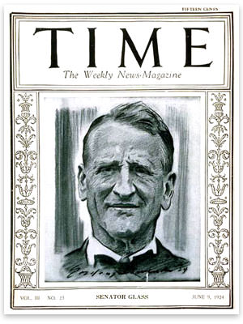
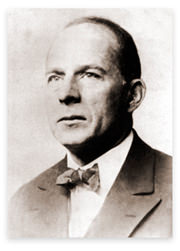

The Revolution Was
[This essay was first published as a monograph in 1938, now republished in Ex-America, copyright Caxton Press.]
There are those who still think they are holding the pass against a revolution that may be coming up the road. But they are gazing in the wrong direction. The revolution is behind them. It went by in the Night of Depression, singing songs to freedom.
There are those who have never ceased to say very earnestly, "Something is going to happen to the American form of government if we don't watch out." These were the innocent disarmers. Their trust was in words. They had forgotten their Aristotle. More than 2,000 years ago he wrote of what can happen within the form, when "one thing takes the place of another, so that the ancient laws will remain, while the power will be in the hands of those who have brought about revolution in the state."
Worse outwitted were those who kept trying to make sense of the New Deal from the point of view of all that was implicit in the American scheme, charging it therefore with contradiction, fallacy, economic ignorance, and general incompetence to govern.
But it could not be so embarrassed, and all that line was wasted, because, in the first place, it never intended to make that kind of sense, and secondly, it took off from nothing that was implicit in the American scheme.
It took off from a revolutionary base. The design was European. Regarded from the point of view of revolutionary technique, it made perfect sense. Its meaning was revolutionary and it had no other. For what it meant to do, it was from the beginning consistent in principle, resourceful, intelligent, masterly in workmanship, and it made not one mistake.
The test came in the first one hundred days.
No matter how carefully a revolution may have been planned there is bound to be a crucial time. That comes when the actual seizure of power is taking place. In this case certain steps were necessary. They were difficult and daring steps. But more than that, they had to be taken in a certain sequence, with forethought and precision of timing. One out of place might have been fatal. What happened was that one followed another in exactly the right order, not one out of time or out of place.
Having passed this crisis, the New Deal went on from one problem to another, taking them in the proper order, according to revolutionary technique; and if the handling of one was inconsistent with the handling of another, even to the point of nullity, that was blunder in reverse. The effect was to keep people excited about one thing at a time, and divided, while steadily through all the uproar of outrage and confusion a certain end, held constantly in view, was pursued by main intention.
The end held constantly in view was power.
In a revolutionary situation, mistakes and failures are not what they seem. They are scaffolding. Error is not repealed. It is compounded by a longer law, by more decrees and regulations, by further extensions of the administrative hand. As deLawd said in The Green Pastures, that when you have passed a miracle you have to pass another one to take care of it, so it was with the New Deal. Every miracle it passed, whether it went right or wrong, had one result. Executive power over the social and economic life of the nation was increased. Draw a curve to represent the rise of executive power and look there for the mistakes. You will not find them. The curve is consistent.
At the end of the first year, in his annual message to the Congress, January 4, 1934, President Roosevelt said, "It is to the eternal credit of the American people that this tremendous readjustment of our national life is being accomplished peacefully."
Peacefully if possible — of course.
But the revolutionary historian will go much further. Writing at some distance in time he will be much less impressed by the fact that it was peacefully accomplished than by the marvelous technique of bringing it to pass not only within the form but within the word, so that people were all the while fixed in the delusion that they were talking about the same things because they were using the same words. Opposite and violently hostile ideas were represented by the same word signs. This was the American people's first experience with dialectic according to Marx and Lenin.
Until it was too late, few understood one like Julius C. Smith, of the American Bar Association, saying,
Is there any labor leader, any businessman, any lawyer or any other citizen of America so blind that he cannot see that this country is drifting at an accelerated pace into administrative absolutism similar to that which prevailed in the governments of antiquity, the governments of the Middle Ages, and in the great totalitarian governments of today? Make no mistake about it. Even as Mussolini and Hitler rose to absolute power under the forms of law … so may administrative absolutism be fastened upon this country within the Constitution and within the forms of law.
For a significant illustration of what has happened to words — of the double meaning that inhabits them — put in contrast what the New Deal means when it speaks of preserving the American system of free private enterprise and what American business means when it speaks of defending it. To the New Deal these words — the American system of free private enterprise — stand for a conquered province. To the businessman the same words stand for a world that is in danger and may have to be defended.
The New Deal is right.
Business is wrong.
You do not defend a world that is already lost. When was it lost? That you cannot say precisely. It is a point for the revolutionary historian to ponder. We know only that it was surrendered peacefully, without a struggle, almost unawares. There was no day, no hour, no celebration of the event — and yet definitely, the ultimate power of initiative did pass from the hands of private enterprise to government.
There it is and there it will remain until, if ever, it shall be reconquered. Certainly government will never surrender it without a struggle.
To the revolutionary mind the American vista must have been almost as incredible as Genghis Khan's first view of China — so rich, so soft, so unaware.
No politically adult people could ever have been so little conscious of revolution. There was here no revolutionary tradition, as in Europe, but in place of it the strongest tradition of subject government that had ever been evolved — that is, government subject to the will of the people, not its people but the people. Why should anyone fear government?
In the naive American mind the word "revolution" had never grown up. The meaning of it had not changed since horse-and-buggy days, when Oliver Wendell Holmes said, "Revolutions are not made by men in spectacles." It called up scenes from Carlyle and Victor Hugo, or it meant killing the Czar with a bomb, as he may have deserved for oppressing his people. Definitely, it meant the overthrow of government by force; and nothing like that could happen here. We had passed a law against it.
Well, certainly nothing like that was going to happen here. That it probably could not happen, and that everybody was so sure it couldn't made everything easier for what did happen.
Revolution in the modern case is no longer an uncouth business. The ancient demagogic art, like every other art, has, as we say, advanced. It has become in fact a science — the science of political dynamics. And your scientific revolutionary in spectacles regards force in a cold, impartial manner. It may or may not be necessary. If not, so much the better; to employ it wantonly, or for the love of it, when it is not necessary, is vulgar, unintelligent, and wasteful. Destruction is not the aim. The more you destroy the less there is to take over. Always the single end in view is a transfer of power.
Outside of the Communist Party and its aurora of radical intellectuals, few Americans seemed to know that revolution had become a department of knowledge, with a philosophy and a doctorate of its own, a language, a great body of experimental data, schools of method, textbooks, and manuals — and this was revolution regarded not as an act of heroic redress in a particular situation, but revolution as a means to power in the abstract case.
There was a prodigious literature of revolutionary thought concealed only by the respectability of its dress.
Americans generally associated dangerous doctrine with bad printing, rude grammar, and stealthy distribution. Here was revolutionary doctrine in well-printed and well-written books, alongside of best sellers at your bookstore or in competition with detectives on your news-dealer's counter. As such, it was all probably harmless, or it was about something that could happen in Europe, not here. A little Communism on the newsstand like that might be good for us, in fact, regarded as a twinge of pain in a robust, somewhat reckless social body. One ought to read it, perhaps, just to know. But one had tried, and what dreary stuff it had turned out to be!
To the revolutionary this same dreary stuff was the most exciting reading in the world. It was knowledge that gave him a sense of power. One who mastered the subject to the point of excellence could be fairly sure of a livelihood by teaching and writing, that is, by imparting it to others, and meanwhile dream of passing at a single leap from this mean obscurity to the prestige of one who assists in the manipulation of great happenings; while one who mastered it to the point of genius — that one might dream of becoming himself the next Lenin.
| "People were all the while fixed in the delusion that they were talking about the same things because they were using the same words." |
A society so largely founded on material success and the rewards of individualism in a system of free competitive enterprise would be liable to underestimate both the intellectual content of the revolutionary thesis and the quality of the revolutionary mind that was evolving in a disaffected and envious academic world. At any rate, this society did, and from the revolutionary point of view that was one of the peculiar felicities of the American opportunity. The revolutionary mind that did at length evolve was one of really superior intelligence, clothed with academic dignity, always sure of itself, supercilious and at ease in all circumstances. To entertain it became fashionable. You might encounter it anywhere, and nowhere more amusingly than at a banker's dinner table, discussing the banker's trade in a manner sometimes very embarrassing to the banker. Which of these brilliant young men in spectacles was of the cult and which was of the cabal — if there was a cabal — one never knew. Indeed, it was possible that they were not sure of it among themselves, a time having come when some were only playing with the thought of extremes while others were in deadly earnest, all making the same sounds. This was the beginning of mask and guise.
The scientific study of revolution included, of course, analysis of opportunity. First and always, the master of revolutionary technique is an opportunist. He must know opportunity when he sees it in the becoming; he must know how to stalk it, how to let it ripen, how to adapt his means to the realities. The basic ingredients of opportunity are few; nearly always it is how they are mixed that matters. But the one indispensable ingredient is economic distress, and, if there is enough of that, the mixture will take care of itself.
The Great Depression as it developed here was such an opportunity as might have been made to order. The economic distress was relative, which is to say that at the worst of it living in this country was better than living almost anywhere else in the world. The pain, nevertheless, was very acute; and much worse than any actual hurt was a nameless fear, a kind of active despair, that assumed the proportions of a national psychosis.
Seizures of that kind were not unknown in American history. Indeed, they were characteristic of the American temperament. But never before had there been one so hard and never before had there been the danger that a revolutionary elite would be waiting to take advantage of it.
This revolutionary elite was nothing you could define as a party. It had no name, no habitat, no rigid line. The only party was the Communist Party, and it was included, but its attack was too obvious and its proletarianism too crude; and moreover, it was under the stigma of not belonging. Nobody could say that about the elite above. It did belong, it was eminently respectable, and it knew the American scene. What it represented was a quantity of bitter intellectual radicalism infiltrated from the top downward as a doctorhood of professors, writers, critics, analysts, advisers, administrators, directors of research, and so on — a prepared revolutionary intelligence in spectacles.
There was no plan to begin with. But there was a shibboleth that united them all: "Capitalism is finished."
There was one idea in which all differences could be resolved, namely, the idea of a transfer of power. For that, a united front; after that, anything. And the wine of communion was a passion to play upon history with a scientific revolutionary technique.
The prestige of the elite was natural for many reasons, but it rested also upon one practical consideration. When the opportunity came a Gracchus would be needed. The elite could produce one. And that was something the Communist Party could not hope to do.
Now given —
- the opportunity,
- a country whose fabulous wealth was in the modern forms — dynamic, functional, nonportable,
- a people so politically naïve as to have passed a law against any attempt to overthrow their government by force — and,
- the intention to bring about what Aristotle called a revolution in the state, within the frame of existing law —
Then from the point of view of scientific revolutionary technique, what would the problems be?
| "To the New Deal these words — the American system of free private enterprise — stand for a conquered province. To the businessman the same words stand for a world that is in danger and may have to be defended." |
They set themselves down in sequence as follows:
- The first, naturally, would be to capture the seat of government.
- The second would be to seize economic power.
- The third would be to mobilize by propaganda the forces of hatred.
- The fourth would be to reconcile and then attach to the revolution the two great classes whose adherence is indispensable but whose interests are economically antagonistic, namely, the industrial wage earners and the farmers, called in Europe workers and peasants.
- The fifth would be what to do with business — whether to liquidate or shackle it.
(These five would have a certain imperative order in time and require immediate decisions because they belong to the program of conquest. That would not be the end. What would then ensue? A program of consolidation. Under that head the problems continue.)
- The sixth, in Burckhardt's devastating phrase, would be "the domestication of individuality" — by any means that would make the individual more dependent upon government.
- The seventh would be the systematic reduction of all forms of rival authority.
- The eighth would be to sustain popular faith in an unlimited public debt, for if that faith should break the government would be unable to borrow; if it could not borrow it could not spend; and the revolution must be able to borrow and spend the wealth of the rich or else it will be bankrupt.
- The ninth would be to make the government itself the great capitalist and enterpriser, so that the ultimate power in initiative would pass from the hands of private enterprise to the all-powerful state.
Each one of these problems would have two sides, one the obverse and one the reverse, like a coin. One side only would represent the revolutionary intention. The other side in each case would represent Recovery — and that was the side the New Deal constantly held up to view. Nearly everything it did was in the name of Recovery. But in no case was it true that for the ends of economic recovery alone one solution or one course and one only was feasible. In each case there was an alternative and therefore a choice to make.
What we shall see is that in every case the choice was one that could not fail:
- to ramify the authority and power of executive government — its power, that is, to rule by decrees and rules and regulations of its own making;
- to strengthen its hold upon the economic life of the nation;
- to extend its power over the individual;
- to degrade the parliamentary principle;
- to impair the great American tradition of an independent, Constitutional judicial power;
- to weaken all other powers — the power of private enterprise, the power of private finance, the power of state and local government;
- to exalt the leader principle.
There was endless controversy as to whether the acts of the New Deal did actually move recovery or retard it, and nothing final could ever come of that bitter debate because it is forever impossible to prove what might have happened in place of what did. But a positive result is obtained if you ask, Where was the New Deal going?
The answer to that question is too obvious to be debated. Every choice it made, whether it was one that moved recovery or not, was a choice unerringly true to the essential design of totalitarian government, never of course called by that name either here or anywhere else.
How it worked, how the decisions were made, and how acts that were inconsistent from one point of view were consistent indeed from the other — that now is the matter to be explored, seriatim.
Problem 1: To Capture the Seat of Government
There was here no choice of means. The use of force was not to be considered. Therefore, it had to be done by ballot. That being the case, and the factor of political discontent running very high, the single imperative was not to alarm the people.
Robert Taft (1889–1953) |
Senator Taft says that in the presidential campaign of 1932, "the New Deal was hidden behind a program of economy and state rights."
That is true. Nevertheless, a New Dealer might say, "How could we tell the people what we were going to do when we ourselves did not know?" And that also may be true — that they did not know what they were going to do.
Lenin, the greatest theorist of them all, did not know what he was going to do after he had got the power. He made up plans as he went along, changed them if they did not work, even reversed them, but always of course in a manner consistent with his basic revolutionary thesis. And so it was with Hitler, who did it by ballot, and with Mussolini, who did it by force.
There was probably no blueprint of the New Deal, nor even a clear drawing. Such things as the A.A.A. and the Blue Eagle were expedient inventions. What was concealed from the people was a general revolutionary intention — the intention, that is, to bring about revolution in the state, within the form of law. This becomes clear when you set down what it was the people thought they were voting for in contrast with what they got.
They thought they were voting for less government, not more; for an end of deficit spending by government, not deficit spending raised to the plane of a social principle; and for sound money, not as the New Deal afterward defined it, but as everybody then understood it, including Senator Glass, formerly Secretary of the Treasury, who wrote the money plank in the Democratic Party platform and during the campaign earnestly denounced as akin to treason any suggestion that the New Deal was going to do what it did forthwith proceed to do, over his dramatic protest.
The first three planks of the Democratic Party platform read as follows:
We advocate an immediate and drastic reduction of governmental expenditures by abolishing useless commissions and offices, consolidating departments and bureaus, and eliminating extravagance to accomplish a saving of not less than twenty-five per cent in the cost of the Federal Government. …
We favor maintenance of the national credit by a federal budget annually balanced on the basis of accurate executive estimates within revenues, raised by a system of taxation levied on the principle of ability to pay.
We advocate a sound currency to be preserved at all hazards and an international monetary conference called on the invitation of our government to consider the rehabilitation of silver and related questions.
Mr. Roosevelt pledged himself to be bound by this platform as no president had ever before been bound by a party document. All during the campaign he supported it with words that could not possibly be misunderstood. He said,
I accuse the present administration [Hoover's] of being the greatest spending administration in peace time in all American history — one which piled bureau on bureau, commission on commission, and has failed to anticipate the dire needs or reduced earning power of the people. Bureaus and bureaucrats have been retained at the expense of the taxpayer…. We are spending altogether too much money for government services which are neither practical nor necessary. In addition to this, we are attempting too many functions and we need a simplification of what the federal government is giving to the people.
This he said many times.
Few of the great majority that voted in November, 1932 for less federal government and fewer federal functions could have imagined that by the middle of the next year the extensions of government and the multiplication of its functions would have been such as to create serious administrative confusion in Washington, which the president, according to his own words, dealt with in the following manner:
On July eleventh I constituted the Executive Council for the simple reason that so many new agencies having been created, a weekly meeting with the members of the Cabinet in joint session was imperative…. Mr. Frank C. Walker was appointed as Executive Secretary of the Council.
Fewer still could have believed that if such a thing did happen it would be more than temporary, for the duration of the emergency only; and yet within a year after Mr. Roosevelt had pledged himself, if elected, to make a 25 percent cut in federal government by "eliminating functions" and by "abolishing many boards and commissions," he was writing, in a book entitled On Our Way, the following:
In spite of the necessary complexity of the group of organizations whose abbreviated titles have caused some amusement, and through what has seemed to some a mere reaching out for centralized power by the federal government, there has run a very definite, deep and permanent objective.
Few of the majority that voted in November 1932 for an end of deficit spending and a balanced federal budget could have believed that the president's second budget message to Congress would shock the financial reason of the country, or that in that same book, On Our Way, he would be writing about it in a blithesome manner, saying,
The next day, I transmitted the Annual Budget Message to the Congress. It is, of course, filled with figures and accompanied by a huge volume containing in detail all of the proposed appropriations for running the government during the fiscal year beginning July 1,1934 and ending June 30,1935. Although the facts of previous appropriations had all been made public, the country, and I think most of the Congress, did not fully realize the huge sums which would be expended by the government this year and next year; nor did they realize the great amount the Treasury would have to borrow.

And certainly almost no one who voted in November 1932 for a sound, gold-standard money according to the Glass money plank in the platform could have believed that less than a year later, in a radio address reviewing the extraordinary monetary acts of the New Deal, the president would be saying, "We are thus continuing to move toward a managed currency."
The broken party platform, as an object, had a curious end. Instead of floating away and out of sight as a proper party platform should, it kept coming back with the tide. Once it came so close that the president had to notice it. Then all he did was to turn it over, campaign side down, with the words
I was able, conscientiously, to give full assent to this platform and to develop its purpose in campaign speeches. A campaign, however, is apt to partake so much of the character of a debate and the discussion of individual points that the deeper and more permanent philosophy of the whole plan (where one exists) is often lost.
At that the platform sank.
And so the first problem was solved. The seat of government was captured by ballot, according to law.
Problem 2: To Seize Economic Power
This was the critical problem. The brilliant solution of it will doubtless make a classic chapter in the textbooks of revolutionary technique. In a highly evolved money economy, such as this one, the shortest and surest road to economic power would be what? It would be control of money, banking, and credit. The New Deal knew that answer. It knew also the steps and how to take them, and above all, it knew its opportunity.
It arrived at the seat of government in the midst of that well-known phenomenon called a banking crisis, such as comes at the end of every great depression. It is like the crisis of a fever. When the banks begin to fail, pulling one another down, that is the worst that can happen. If the patient does not die then he will recover. We were not going to die. The same thing had happened to us before, once or twice in every twenty years, and always before the cure had brought itself to pass as it was bound to do again.
In his inaugural address, March 4, 1933, the president declared that the people had "asked for discipline and direction under leadership"; that he would seek to bring speedy action "within my Constitutional authority"; and that he hoped the "normal balance of executive and legislative authority" could be maintained, and then said,
But in the event that Congress shall fail … and in the event that the national emergency is still critical … I shall ask Congress for the one remaining instrument to meet the crisis — broad executive power to make war against the emergency, as great as the power that would be given to me if we were in fact invaded by a foreign foe.
It is true that people wanted action. It is true that they were in a mood to accept any painkiller, and damn the normal balance of authority between the executive and legislative authority. That was an emotional state of mind perfectly suited to a revolutionary purpose, and the president took advantage of it to make the first startling exposition of New Deal philosophy. Note his assertion of the leadership principle over any other. Discipline under leadership. Note the threat to Congress — "in the event that Congress shall fail." But who was to say if the Congress had failed? The leader, of course. If in his judgment the Congress failed, then, with the people behind him, he would demand war powers to deal with an economic emergency.
The word emergency was then understood to mean what the dictionaries said it meant — namely, a sudden juncture of events demanding immediate action. It was supposed to refer only to the panic and the banking crisis, both temporary.
But what it meant to the president, as nobody then knew, was a very different thing. Writing a year later, in his book, On Our Way, he said,
Strictly speaking, the banking crisis lasted only one week…. But the full meaning of that word emergency related to far more than banks; it covered the whole economic and therefore the whole social structure of the country. It was an emergency that went to the roots of our agriculture, our commerce, our industry; it was an emergency that has existed for a whole generation in its underlying causes and for three-and-one-half years in its visible effects. It could be cured only by a complete reorganization and measured control of the economic structure. It called for a long series of new laws, new administrative agencies. It required separate measures affecting different subjects; but all of them component parts of a fairly definite broad plan.
So, what the New Deal really intended to do, what it meant to do within the Constitution if possible, with the collaboration of Congress if Congress did not fail, but with war powers if necessary, was to reorganize and control the "whole economic and therefore the whole social structure of the country." And therein lay the meaning — the only consistent meaning — of a series of acts touching money, banking and credit which, debated as monetary policy, made no sense whatever.
| "No politically adult people could ever have been so little conscious of revolution." |
The first step, three days before the new Congress convened, was an executive decree suspending all activities of banking throughout the country. Simply, every bank was shut up. The same decree forbade, under pain of fine and imprisonment, any dealing in foreign exchange or any transfer of credit from the United States to any place abroad, and that was to slam the door against the wicked rich who might be tempted to run out.
The second step was an act of Congress, saying, "Acts of the President and Secretary of the Treasury since March 4, 1933, are hereby confirmed and approved."
That made everything legal after the fact: and it was the first use of Congress as a rubber stamp. The same act of Congress provided that no bank in the Federal Reserve System should resume business except subject to rules and regulations to be promulgated by the Secretary of the Treasury, gave the president absolute power over foreign exchange and authorized the federal government to invest public funds in private bank stock, thereby providing banks with new capital owned by the government. And that was the act that authorized the president to require people to surrender their gold. Congress did not write any of these acts. It received them from the White House and passed them.
The third step was a decree by the president requiring all persons and corporations whatever to divest themselves of gold and hand it over to the government. The law authorizing him to do that had fixed the penalty of noncompliance at a fine equal to twice the value of the gold. The executive decree added the penalty of imprisonment.
In view of further intentions not yet disclosed it was imperative for the government to get possession of all the gold. With a lot of gold in private hands, its control of money, banking, and credit could have been seriously challenged. All that the government asked for at first was possession of the gold, as if it were a trust. For their gold as they gave it up people received paper money, but this paper money was still gold-standard money — that is to say, it had always been exchangeable for gold, dollar for dollar, and people supposed that it would be so again, when the crisis passed. Not a word had yet been said about devaluing the dollar or repudiating the gold standard. The idea held out was that as people surrendered their gold they were supporting the nation's credit.
This decree calling in the gold was put forth on April 5. There was then an awkward interlude. The Treasury was empty. It had to sell some bonds. If people knew what was going to happen they might hesitate to buy new Treasury bonds. Knowing that it was going to devalue the dollar, knowing that it was going to repudiate the gold-redemption clause in its bonds, even while it was writing the law of repudiation, the government nevertheless issued and sold to the people bonds engraved as usual, that is, with the promise of the United States Government to pay the interest and redeem the principal "in United States gold coin of the present standard of value."
The fourth step was the so-called Inflation Amendment attached to the Emergency Farm Relief Act. This law made sure that the Treasury need not be caught that way again. It forcibly opened the tills of the Federal Reserve Bank System to three billions of Treasury notes, authorized three billions of fiat money to be issued in the president's discretion, and gave the president power in his own discretion to devalue the dollar by one-half.
The fifth step was the act of repudiation. By resolution June 5, 1933, the Congress repudiated the gold redemption clause in all government obligations, saying they should be payable when due in any kind of money the government might see fit to provide; and, going further, it declared that the same traditional redemption clause in all private contracts, such, for example, as railroad and other corporation bonds, was contrary to public policy and therefore invalid.
| "Destruction is not the aim. The more you destroy the less there is to take over. Always the single end in view is a transfer of power." |
The sixth step was a new banking act giving the federal government power to say how private banks should lend their money, on what kinds of collateral and in what proportions, and the arbitrary power to cut them off from credit with Federal Reserve Banks. This arbitrary power to cut them off from credit was a stranglehold, and it was gained by changing one little word in the country's organic banking law. From the beginning until then the law was that a Federal Reserve Bank "shall" lend to a private bank on suitable security. This word was changed to "may." Thus a right became a privilege and a privilege that could be suspended at will.
The seventh step — and it was the one most oblique — was to produce what may be described as monetary pandemonium. This continued for six months. To understand it will require some effort of attention.
When by the Inflation Amendment the dollar was cut loose from gold it did not immediately fall. That was because, in spite of everything, it was the best piece of money in the whole world. Well then, when the dollar did not fall headlong of its own weight the government began to club it down, and the club it used to beat it with was gold.
In the president's words the procedure was like this:
I am authorizing the Reconstruction Finance Corporation to buy newly mined gold in the United States at prices to be determined from time to time after consultation with the secretary of the treasury and the president. Whenever necessary to the end in view we shall also buy or sell gold in the world market. My aim in taking this step is to establish and maintain continuous control. This is a policy and not an expedient.
Each morning thereafter the Treasury announced the price the government would pay for gold in paper dollars, one day 30 paper dollars for one ounce of gold, the next day 32 dollars, two days later 34 dollars, and so on; and not only the newly mined gold in this country but anybody's gold anywhere in the world. Thus day by day the president and the Secretary of the Treasury determined the value of gold priced in American paper dollars, or the value of American paper dollars priced in gold, which was the same thing; and how they did it or by what rule, if any, nobody ever knew.
The spectacle of a great, solvent government paying a fictitious price for gold it did not want and did not need and doing it on purpose to debase the value of its own paper currency was one to astonish the world. What did it mean? Regarded as monetary policy it made no meaning whatever. But again, if you will regard it from the point of view of revolutionary technique, it has meaning enough.
One effect was that private borrowing and lending, except from day to day, practically ceased. With the value of the dollar being posted daily at the Treasury like a lottery number, who would lend money for six months or a year, with no way of even guessing what a dollar would be worth when it came to be paid back? "No man outside of a lunatic asylum," said Senator Glass, "will loan his money today on a farm mortgage."
But the New Deal had a train of federal lending agencies ready to start. The locomotive was the Reconstruction Finance Corporation. The signal for the train to start was a blast of propaganda denouncing Wall Street, the banks and all private owners of capital for their unwillingness to lend. So the government, in their place, became the great provider of credit and capital for all purposes. It loaned public funds to farmers and home owners to enable them to pay off their mortgages; it loaned also to banks, railroads, business, industry, new enterprise, even to foreign borrowers.
Thereby private debt was converted into public debt in a very large and popular way. It was popular because the government, having none of the problems of a bank or a private lender, with no fetish of solvency to restrain it, with nothing really to lose even though the money should never come back, was a benevolent lender. It loaned public money to private borrowers on terms and at rates of interest with which no bank nor any private lender could compete; and the effect was to create a kind of fictitious, self-serving necessity. The government could say to the people, and did say to them: "Look. It is as we said. The money changers, hating the New Deal, are trying to make a credit famine. But your government will beat them."
In a fireside chat, October 22, 1933, the president said,
I have publicly asked that foreclosures on farms and chattels and on homes be delayed until every mortgagor in the country shall have had full opportunity to take advantage of Federal credit. I make the further request, which many of you know has already been made through the great Federal credit organizations, that if there is any family in the United States about to lose its home or about to lose its chattels, that family should telegraph at once either to the Farm Credit Administration or to the Home Owners Loan Corporation in Washington requesting their help. Two other great agencies are in full swing. The Reconstruction Finance Corporation continues to lend large sums to industry and finance, with the definite objective of making easy the extending of credit to industry, commerce and finance.
The other great lending agency to which he referred was the one that dispensed federal credit to states, cities, towns, and worthy private organizations for works of public and social benefit. In the same fireside chat he urged them to come on with their projects. "Washington," he said, "has the money and is waiting for the proper projects to which to allot it."
| "It is true that people wanted action. It is true that they were in a mood to accept any painkiller, and damn the normal balance of authority between the executive and legislative authority." |
Then began to be heard the saying that Washington had become the country's Wall Street, which was literally true. Anyone wanting credit for any purpose went no longer to Wall Street but to Washington. The transfer of the financial capital of the nation to Washington, the president said, would be remembered, as "one of the two important happenings of my Administration."
What was the source of the money? Partly it was imaginary money, from inflation. Largely it was the taxpayer's money. If the government lost it the taxpayer would have to find it again. And some of it, as the sequel revealed, was going to be confiscated money. By this time the New Deal had got control of the public purse. The Congress had surrendered control of it by two acts of self-abnegation. One was the Inflation Amendment and the other was an appropriation of $3,300,000,000 put into the hands of the president to do with what he liked as the architect of recovery.
All through the commotion of these unnatural events one end was held steadily in view, and that was a modern version of the act for which kings had been hated and sometimes hanged, namely to clip the coin of the realm and take the profit into the king's revenue.
The eighth step was the act of confiscation. At the president's request the Congress, on January 30, 1934, passed a law vesting in the federal government absolute title to all that gold which people had been obliged to exchange for gold-standard paper dollars the year before, thinking as they did that it was for the duration of the emergency only and that they were supporting the nation's credit. They believed the statement issued at the time by the secretary of the Treasury, saying, "Those surrendering the gold of course receive an equivalent amount of other forms of currency and those other forms of currency may be used for obtaining gold in an equivalent amount when authorized for proper purposes." Having by such means got physical possession of the gold, it was a very simple matter for the government to confiscate it. All that it had to do was to have Congress pass a law vesting title in the government.
The ninth and last step was to devalue the dollar. In his message to Congress asking for the law that confiscated the gold, the president said, "I do not believe it desirable in the public interest that an exact value be now fixed." Nevertheless, on January 31, 1934, the day after the act of confiscation was passed, he did fix the exact value of the dollar at 59 per cent of its former gold content. The difference, which was 41 cents in every dollar of gold that had been confiscated, was counted as government profit and took the form of a free fund of two billions in the Treasury, called a stabilization fund, with which the president could do almost anything he liked. Actually it was used to take control of the foreign exchange market out of the hands of international finance.
Control of money, banking, and credit had passed to Washington. Thus problem number two was solved.
The reason for giving so much attention to it is that it was the New Deal's most brilliant feat; and certainly not the least remarkable fact about it was the skill with which criticism was played into making its fight on false and baited ground. Each step as it occurred was defended, and therefore attacked, on ground of monetary policy, whereas the ultimate meaning was not there at all.
Consider first the logical sequence of the nine steps; consider secondly that if national recovery had been the end in view many alternative steps were possible, whereas from the point of view of revolutionary technique these nine were the imperative steps and the order in which they were taken was the necessary order. Then ask if it could have happened that way by chance.
Not even a New Dealer any longer maintains that the four steps directly involving gold, namely, the seizure of it, the repudiation of the government's gold contracts, then the confiscation of the gold, and lastly the devaluation of the dollar, were necessary merely as measures toward national recovery. In the history of the case there is no more dramatic bit of testimony than that of Senator Glass, formerly Secretary of the Treasury, who in April, 1933, rose from a sick bed and appeared in the Senate to speak against the Inflation Amendment. He said,
"I wrote with my own hand that provision of the national Democratic platform which declared for a sound currency to be maintained at all hazards…. With nearly 40 per cent of the entire gold supply of the world, why are we going off the gold standard? With all the earmarked gold, with all the securities of ours they hold, foreign governments could withdraw in total less than $700,000,000 of our gold, which would leave us an ample fund of gold, in the extremest case, to maintain gold payments both at home and abroad…. To me the suggestion that we may devalue the gold dollar 59 per cent means national repudiation. To me it means dishonor. In my conception of it, it is immoral…. There was never any necessity for a gold embargo. There is no necessity for making statutory criminals of citizens of the United States who may please to take their property in the shape of gold or currency out of the banks and use it for their own purposes as they may please. We have gone beyond the cruel extremities of the French, and they made it a capital crime, punishable at the guillotine, for any tradesman or individual citizens of the realm to discriminate in favor of gold and against their printing press currency. We have gone beyond that. We have said that no man may have his gold, under penalty of ten years in the penitentiary or $10,000 fine."
And when the "gold cases" went to the United States Supreme Court — the unreconstructed court — the judgment was one that will be forever a blot on a certain page of American history. The Court said that what the government had done was immoral but not illegal. How could that be ? Because the American government, like any other government, has the sovereign power to commit an immoral act. Until then the American government was the only great government in the world that had never repudiated the word engraved upon its bond.
Problem 3: To Mobilize by Propaganda the Forces of Hatred
"We must hate," said Lenin. "Hatred is the basis of Communism." It is no doubt the basis of all mass excitement. But Lenin was not himself the master propagandist. How shall the forces of hatred be mobilized? What are the first principles? These are questions that now belong to a department of political science.
| "Well then, when the dollar did not fall headlong of its own weight the government began to club it down, and the club it used to beat it with was gold." |
The first principle of all is to fix the gaze of hatred upon one object and to make all other objects seem but attributes of that one, for otherwise the force to be mobilized will dissipate itself in many directions.
This was expounded by Hitler in Mein Kampf, where he said, "It is part of the genius of a great leader to make adversaries of different fields appear as always belonging to one category. As soon as the wavering masses find themselves confronting too many enemies objectivity at once steps in and the question is raised whether actually all the others are wrong and their own cause or their own movement right…. Therefore a number of different internal enemies must always be regarded as one in such a way that in the opinion of the mass of one's own adherents the war is being waged against one enemy alone. This strengthens the belief in one's own cause and increases one's bitterness against the attackers."
How in a given situation to act upon this first principle of strategy is a matter to be very carefully explored. You come then to method and tactics, studies of the mass mind, analysis of symbols and slogans, and above all, skill of manipulation.
Lasswell and Blumenstock, in World Revolutionary Propaganda, define propaganda as "the manipulation of symbols to control controversial attitudes." Symbols they define as "words and word substitutes like pictures and gestures." And the purpose of revolutionary propaganda "is to arouse hostile attitudes toward the symbols and practices of the established order."
It may be however that people are so deeply attached by habit and conscience to the symbols of the established order that to attack them directly would produce a bad reaction. In that case the revolutionary propagandist must be subtle. He must know how to create in the mass mind what the scientific propagandist calls a "crisis of conscience." Instead of attacking directly those symbols of the old order to which the people are attached he will undermine and erode them by other symbols and slogans, and these others must be such as either to take the people off guard, or, as Lasswell and Blumenstock say, they must be "symbols which appeal to the conscience on behalf of symbols which violate the conscience."
This is an analytic statement and makes it sound extremely complex. Really it is quite simple. For example, if the propagandist said, "Down with the Constitution!" — bluntly like that — he would be defeated because of the way the Constitution is enshrined in the American conscience. But he can ask: "Whose Constitution?" That question may become a slogan. He can ask: "Shall the Constitution be construed to hold say it is." And that creates an image, which is a symbol. He can ask: "shall the Constitution be construed to hold property rights above human rights?" Or, as the president did, he may regretfully associate the Constitution with "horse-and-buggy days."
The New Deal's enmity for that system of free and competitive private enterprise which we call capitalism was fundamental. And this was so for two reasons, namely: first, that its philosophy and that of capitalism were irreconcilable, and secondly, that private capitalism by its very nature limits government.
In Russia capitalism, such as it was there, could be attacked directly. The people were not attached to it in any way. In this country it was very different. Americans did not hate capitalism. They might criticise it harshly for its sins, most of which were sins of self-betrayal, but its true symbols nevertheless were deeply embedded in the American tradition; and, moreover, a great majority of the people were in one way or another little capitalists. To have said, "Down with capitalism!" or, "Down with free private enterprise!" would have been like saying, "Down with the Constitution!" The attack, therefore, had to be oblique.
In his first inaugural address, March 4, 1933, the president said,
Values have shrunk to fantastic levels; taxes have risen; our ability to pay has fallen; … the withered leaves of industrial enterprise lie on every side; farmers find no market for their produce; the savings of many years in thousands of families are gone. More important, a host of unemployed citizens face the grim problem of existence, and an equally great number toil with little return…. Yet our distress comes from no failure of substance…. Nature still offers her bounty. Plenty is at our doorstep, but a generous use of it languishes in the very sight of the supply. Primarily this is because the rulers of the exchange of mankind's goods have failed, … have admitted their failure and have abdicated. Practices of the unscrupulous moneychangers stand indicted in the court of public opinion, rejected by the hearts and minds of men…. They know only the rules of a generation of self-seekers…. Yes, the moneychangers have fled from their high seats in the temple of our civilization. We may now restore that temple to the ancient truths. The measure of that restoration lies in the extent to which we apply social values more noble than mere monetary profit.
There was the pattern and it never changed. The one enemy, blameable for all human distress, for unemployment, for low wages, for the depression of agriculture, for want in the midst of potential plenty — who was he? The moneychanger in the temple. This was a Biblical symbol and one of the most hateful. With what modern symbol did this old and hateful one associate? With the Wall Street banker, of course; and the Wall Street banker was the most familiar and the least attractive symbol of capitalism.
| "Each step as it occurred was defended, and therefore attacked, on ground of monetary policy, whereas the ultimate meaning was not there at all." |
Therefore, capitalism, obliquely symbolized by the moneychanger scourged out of the temple, was entirely to blame; capitalism was the one enemy, the one object to be hated. But never was it directly attacked or named; always it was the old order that was attacked. The old order became a symbol of all human distress. "We cannot go back to the old order," said the president. And this was a very hateful counter symbol, because the old order, never really defined, did in fact associate in the popular mind with the worst debacle in the history of capitalism.
It was never the capitalist that was directly attacked. Always it was the economic royalist, the brigand of the skyscrapers, the modern tory — all three hateful counter symbols. The true symbols of the three competitive systems in which people believed were severely let alone. The technique in every case was to raise against them counter symbols. Thus, against the inviolability of private property was raised the symbol of those who would put property rights above human rights; and against all the old symbols of individualism and self-reliance was raised the attractive counter symbol of security.
To bring hatred to bear upon the profit motive there were two techniques. One was to say, as the president said in his first inaugural, that social values were more noble than mere monetary profit, as if in any free scheme you could have social gains without plenty of mere monetary profit; the other was to speak only of great profits, as if in a free profit and loss system you could have little profits and little losses without big profits and big losses.
It is not unnatural for people to think envious thoughts about large profits, and envious thoughts are very easy to exploit, as every demagogue knows. But no government before the New Deal had ever deliberately done it. In a homecoming speech to his Dutchess County neighbors, in August, 1933, the president explained why it had seemed necessary for the New Deal to limit personal liberty in certain ways. It was to make all men better neighbors in spite of themselves; and as if this were no new thing he said,
Many years ago we went even further in saying that the government would place increasing taxes on increasing profits because very large profits were, of course, made at the expense of the neighbors and should, to some extent at least, be used for the benefit of the neighbors.
Large profit as such becomes therefore a symbol of social injury, merely because it is large; moreover, it is asserted that large profit had long been so regarded by the government and penalized for that reason.
Of all the counter symbols this was the one most damaging to the capitalistic system. Indeed, if it were accepted, it would be fatal, because capitalism is a profit and loss system and if profits, even very large profits, are socially wrong, there is nothing more to be said for it. But it was a false symbol, and false for these three reasons, namely: first, there is no measure of large profit; second, large profits are of many kinds and to say simply that large profits are "of course made at the expense of the neighbors" is either nonsense or propaganda, as you like; and, in the third place, the history is wrong.
When the federal government many years ago imposed a graduated income tax — that is, taxing the rich at a higher rate than the well-to-do and taxing the poor not at all, the idea was not that large profits or large incomes were gained at the expense of one's neighbors, not that the rich were guilty because they were rich. The idea was to impose taxes according to the ability to pay. The well-to-do could afford to pay more than the poor and the rich could afford to pay more than the well-to-do, and that was all.
What made it all so effective was that this was the American people's first experience with organized government propaganda designed "to arouse hostile attitudes toward the symbols and practices of the established order" — and that, if you will remember, was the most precise definition of revolutionary propaganda that Lasswell and Blumenstock could think of in their scientific study of World Revolutionary Propaganda.
This is the problem for which revolutionary theory has yet to find the right solution, if there is one. The difficulty is that the economic interests of the two classes are antagonistic. If you raise agricultural prices to increase the farmer's income the wage earner has to pay more for food. If you raise wages to increase the wage earner's income the farmer has to pay more for everything he buys. And if you raise farm prices and wages both it is again as it was before. Nevertheless, to win the adherence which is indispensable you have to promise to increase the income of the farmer without hurting the wage earner and to increase the wage earner's income without hurting the farmer. The only solution so far has been one of acrobatics. The revolutionary party must somehow ride the seesaw.
| "Capitalism was the one enemy, the one object to be hated. But never was it directly atacked or named; always it was the old order that was attacked." |
In Russia it was the one most troublesome problem. The peasants understood at first that there was to be a free distribution of land among them. When the Bolshevik regime put forth its decrees to abolish private property and nationalize the land the peasants went on taking the big estates, dividing the land and treating it as their own; and for a while the government had to let them alone. To have stopped them at once would have hurt the revolution. And when at length the government did come to deal with the peasants as if they were its tenants, whose part was to produce food not for profit but for the good of the whole, the revolution all but died of hunger.
The American farmer was a powerful individualist, with a long habit of aggressive political activity. His complaint was that his relative share of the national income had shrunk and was in all reason too little. This was from various causes, notably, (1) the worldwide depression of agriculture, (2) the low level of farm prices in a market where competition acted freely, and (3) the relative stability of industrial prices in a market that enjoyed tariff protection against world competition. Everything the farmer sold was too cheap; everything he bought was too dear. What he complained of really, though he did not always put it that way, was the economic advantage of the industrial wage earner.
The New Deal was going to redistribute the national income according to ideals of social and economic justice. That was the avowed intention. And once it had got control of money, banking, and credit it could in fact redistribute the national income almost as by a slide rule. The trouble was that if it gave the farmer a large share and left the wage earner's share as it was it would lose the support of labor. And if it used its power to raise all prices in a horizontal manner, according to the thesis of reflation, the economic injustice complained of by the farmer would not be cured.
The solution was a resort to subsidies. If the prices the farmer received were not enough to give him that share of the national income which he enjoyed before the worldwide depression of agriculture, the difference would be made up to him in the form of cash subsidy payments out of the public treasury. The farmer on his part obliged himself to curtail production under the government's direction; it would tell him what to plant and how much. The penalty for not conforming was to be cut off from the stream of beautiful checks issuing from the United States Treasury. The procedure was said to be democratic. It is true that a majority of farmers did vote for it when polled by the federal county agents. The subsidies were irresistible. More income for less work and no responsibility other than to plant and reap as the government said. Nevertheless, it led at once to compulsion, as in cotton, and it led everywhere to coercion of minorities.
The total subsidy payments to farmers ran very high, amounting in one year to more than eight hundred million dollars. And beside these direct subsidy payments, the government conferred upon the farmer the benefit of access to public credit at very low rates of interest with which to refund its mortgages.
Actually, the farmer's income was increased. That was statistically apparent. Whether his relative share of the national income was increased, beyond what it would have been, is another matter. On the whole, probably not. For when the New Deal had done this for the farmer it had to do the equivalent or more for labor, and anything it did to increase labor's share would tend to raise the cost of everything the farmer bought. There was the seesaw again.
What the New Deal did for labor was to pass a series of laws the purpose of which was to give organized labor the advantage in its bargaining with the employer. As these laws were construed and enforced they did principally three things. They delivered to organized labor a legal monopoly of the labor supply; they caused unionism to become in fact compulsory, and they made it possible for unions to practice intimidation, coercion, and violence with complete immunity, provided only it was all in the way of anything that might be called a labor dispute. The underlying idea was that with this power added to it, together with a minimum wage and hour act that made overtime a way of fattening the pay envelope, organized labor could very well by its own exertions increase its share of the national income enough to equal or to overcome the farmer's new advantage. And this organized labor proceeded forthwith to do.
| "It is not unnatural for people to think envious thoughts about large profits, and envious thoughts are very easy to exploit, as every demagogue knows." |
But there was at the same time an indirect subsidy to organized labor much greater than the direct subsidy paid to the farmer. Federal expenditures for work relief, amounting in the average to more than two billions a year, must be regarded as a subsidy to organized labor. The effect was to keep eight or ten million men off the labor market, where their competition for jobs would have been bound to break the wage structure. Thus union labor's monopoly of the labor supply was protected.
Both the subsidies to agriculture and those to labor came out of the United States Treasury, and since the money had to be borrowed by the government and added to the public debt, you would hardly say the solution was either perfect or permanent. But from the point of view of revolutionary technique, that did not matter, provided certain other and more important ends were gained. What would those other ends be? One would be the precedent of making the federal government divider of the national income; another would be to make both the farmer and the union wage earner dependent upon the government — the farmer for his income and union labor for its power. Neither the farmer who takes income from the government nor the union wage earner who accepts from the government a grant of power is thereafter free.
Problem 5: What to Do with Business — Whether to Liquidate or Shackle It
There was a director of the budget who was not at heart a New Dealer. One day he brought to the president the next annual budget — the one of which the president afterward said, "The country, and I think most of Congress, did not fully realize the large sums which would be expended by the government this year and next, nor did they realize the great amount the Treasury would have to borrow."
At the end of his work the director of the budget had written a paragraph saying simply and yet in a positive manner that notwithstanding the extraordinary activities indicated by the figures and by the appropriations that were going to be made, the government had really no thought of going into competition with private enterprise.
Having lingered for some time over this paragraph the president said, "I'm not so sure we ought to say that."
The director of the budget asked, "Why not, Mr. President?"
The president did not answer immediately, but one of his aides who had been listening said, "I'll tell you why. Who knows that we shall not want to take over all business?"
The director of the budget looked at the president, and the president said, "Let's leave it out." And of course it was left out.
It may have been that, at that time, the choice was still in doubt. Under the laws of Delaware, the government had already formed a group of corporations with charter powers so vague and extremely broad that they could have embraced ownership and management of all business. They were like private corporations, only that their officers were all officers of the government, and the capital stock was all government owned. The amount of capital stock was in each case nominal; it was of course expansible to any degree. Why they were formed or what they were for was never explained. In a little while they were forgotten.
Business is in itself a power. In a free economic system it is an autonomous power, and generally hostile to any extension of government power. That is why a revolutionary party has to do something with it. In Russia, it was liquidated; and although that is the short and simple way, it may not turn out so well because business is a delicate and wonderful mechanism; moreover, if it will consent to go along it can be very helpful. Always in business there will be a number, indeed, an astonishing number, who would sooner conform than resist, and besides these there will be always a few more who may be called the quislings of capitalism. Neither Hitler nor Mussolini ever attempted to liquidate business. They only deprived it of its power and made it serve.
| "Large profit as such becomes therefore a symbol of social injury, merely because it is large. … Of all the counter symbols this was the one most damaging to the capitalistic system." |
How seriously the New Deal may have considered the possibility of liquidating business we do not know. Its decision, at any rate, was to embrace the alternative; and the alternative was to shackle it.
In his annual message to Congress the president said,
"In the past few months, as a result of our action, we have demanded of many citizens that they surrender certain licenses to do as they please in their business relationships; but we have asked this in exchange for the protection which the State can give against exploitation by their fellow men or by combinations of their fellow men.
Not even business would be asked to surrender its liberties for nothing. What was it going to receive in exchange? Protection against itself, under the eye of the Blue Eagle.
That did not last. The Blue Eagle came and went. Gen. Hugh Johnson, the stormy administrator of the NRA, said afterward that it was already dying when the Supreme Court cut off its head. Yet business was not unshackled. After all, one big shackle for all business was clumsy and unworkable. There were better ways.
Two years later the president was saying to Congress, "In thirty-four months we have built up new instruments of public power." Who had opposed this extension of government power? He asked the question and answered it. The unscrupulous, the incompetent, those who represented entrenched greed — only these had opposed it. Then he said, "In the hands of a people's government this power is wholesome and proper. But in the hands of political puppets, of an economic autocracy, such power would provide shackles for the liberties of the people."
There, unconsciously perhaps, is a complete statement of the revolutionary thesis. It is not a question of law. It is a question of power. There must be a transfer of power. The president speaks not of laws; he speaks of new instruments of power, such as would provide shackles for the liberties of the people if they should ever fall in other hands. What then has the government done? Instead of limiting by law the power of what it calls economic autocracy the government itself has seized the power.
Problem 6: The Domestication of the Individual
This was not a specific problem. It was rather a line of principle to which the solution of every other problem was referred. As was said before, in no problem to be acted upon by the New Deal was it true that one solution and one only was imperative. In every case there was some alternative. But it was as if in every case the question was, "Which course of action will tend more to increase the dependence of the individual upon the federal government?" — and as if invariably the action resolved upon was that which would appeal rather to the weakness than to the strength of the individual.
And yet the people to be acted upon were deeply imbued with the traditions and maxims of individual resourcefulness — a people who grimly treasured in their anthology of political wisdom the words of Grover Cleveland, who vetoed a federal loan of only ten thousand dollars for drought relief in Texas, saying, "I do not believe that the power and duty of the general Government ought to be extended to the relief of individual suffering…. A prevalent tendency to disregard the limited mission of this power should, I think, be steadfastly resisted, to the end that the lesson should be constantly enforced that though the people support the Government the Government should not support the people…. Federal aid in such cases encourages the expectation of paternal care on the part of the Government and weakens the sturdiness of our National character."
Which was only one more way of saying a hard truth that was implicit in the American way of thinking, namely, that when people support the government they control government, but when the government supports the people it will control them.
| "Who had opposed this extension of government power? He asked the question and answered it. The unscrupulous, the incompetent, those who represented entrenched greed — only these had opposed it." |
Well, what could be done with a people like that? The answer was propaganda. The unique American tradition of individualism was systematically attacked by propaganda in three ways, as follows:
Firstly, by attack that was direct, save only for the fact that the word individualism was qualified by the uncouth adjective rugged; and rugged individualism was made the symbol of such hateful human qualities as greed, utter selfishness, and ruthless disregard of the sufferings and hardships of one's neighbors;
Secondly, by suggestion that in the modern environment the individual, through no fault or weakness of his own, had become helpless and was no longer able to cope with the adversities of circumstances. In one of his fireside chats, after the first six months, the president said, "Long before Inauguration Day I became convinced that individual effort and local effort and even disjointed Federal effort had failed and of necessity would fail, and, therefore, that a rounded leadership by the Federal Government had become a necessity both of theory and of fact." And,
Thirdly, true to the technique of revolutionary propaganda, which is to offer positive substitute symbols, there was held out to the people in place of all the old symbols of individualism the one great new symbol of security.
After the acts that were necessary to gain economic power the New Deal created no magnificent new agency that had not the effect of making people dependent upon the federal government for security, income, livelihood, material satisfactions, or welfare. In this category, its principal works were these:
- For the farmer, the AAA, the FCA, the CCC, the FCI, the AMA, and the SMA, to make him dependent on the federal government for marginal income in the form of cash subsidies, for easy and abundant credit, and for protection in the market place;
- For the landless, the FSA, making them dependent upon the federal government for a complete way of life which they did not always like when the dream came true;
- For union labor, the NLRB, making it dependent on the federal government for advantage against the employer in the procedures of collective bargaining, for the closed shop, and for its monopoly of the labor supply;
- For those who sell their labor, whether organized or not, the FLSA-WHD (minimum wages and minimum hours), making the individual dependent on the federal government for protection (1) against the oppressive employer, (2) against himself lest he be tempted to cheapen the price of labor, and (3) against the competition of others who might be so tempted. Thus for better or worse the freedom of contract between employee and employer was limited.
- For the unemployed, to any number, the WPA, making them directly dependent on the federal government for jobs, besides that they were kept off the labor market;
- For the general welfare and to create indirect employment, the PWA, causing states, cities, towns, counties, and townships to become dependent upon the federal government for grants in aid of public works;
- For home owners in distress, the HOLC, making them dependent on the federal government for temporary outdoor employment, rehabilitation, and vocational training, besides that these too, were kept off the labor market;
- For bank depositors, the FDIC, making them dependent on the federal government for the safety of their bank accounts;
- For the investors, the SEC, making them dependent on the federal government for protection against the vendors of glittering securities;
- For the deep rural population, the REA and the EHFA, making them dependent on the federal government for electrical satisfactions at cost or less;
- For those who live by wages and salaries the SSB, making them dependent on the federal government for old-age pensions and unemployment insurance; also for stern protection against the consequences of their own personal thriftlessness, since half of what goes into the social security reserve fund is taken out of their pay envelopes by the government, whether they like it or not, the government saying to them, "We will save it for you until your winter comes." And since there is no saying anything back to the government this becomes compulsory thrift.
No individual life escaped, unless it was that of a desert rat or cave dweller.
It was thus that the hand of paternal government, having first seized economic power, traced the indelible outlines of the American Welfare State.
In the welfare state, the government undertakes to see to it that the individual shall be housed and clothed and fed according to a statistical social standard, and that he shall be properly employed and entertained, and in consideration for this security the individual accepts in place of entire freedom a status and a number and submits his life to be minded and directed by an all-responsible government.
When New Dealers speak in one breath of a welfare economy and with the next breath bitterly denounce pressure groups it may seem that they involve themselves in an ironical dilemma. It is easy to say, "What would you expect, since you have made division of the national income a matter of political bargaining where before it had been always a matter of economic bargaining?"
Yet they are right, the New Dealers. In the welfare state pressure groups, representing wilful political action, cannot be tolerated. They will have to be suppressed at last, because in the welfare state the government cannot really guarantee social security until it goes to the logical end, which is to ration the national income in time of peace just as all goods and satisfactions are rationed in time of war.
Problem 7: To Reduce All Rival Forms of Authority
The attack on this problem was progressive, with changing features, but the strategy throughout was consistent. The principal forms of rival authority were these four:
- The Congress,
- The Supreme Court,
- Sovereign States, and,
- Local Self-Government, for which we may take the symbol to be the County Court House.
The Congress is the lawmaking power. Under the Constitution, which is the supreme organic law, there is no federal lawmaking power but the Congress. What it represents is the parliamentary principle in free government.
It is the function of the Supreme Court, representing the judicial principle, to interpret the laws when the question is raised whether or not an act of Congress is contrary to the supreme organic law, which is the Constitution, and which only the people can change.
It is the function of the president, representing the executive principle, to execute the laws.
Lastly, each state in the Union has certain sovereign rights; these are rights which in the beginning no state was willing to surrender to the federal government.
Such is the form of the American government. The idea was that it should be a government of law, not a government of men.
| "Each state in the Union has certain sovereign rights; these are rights which in the beginning no state was willing to surrender to the federal government." |
In the special session called by the president to launch the New Deal, the Congress for the first time was under the spell of executive leadership and embraced the leadership principle. It did not write the New Deal laws. It received them from the White House, went through the motions of passing them, engrossed them, and sent them back to the president. That was called the rubber stamp Congress. So long as it was content to keep that role everything was lovely. In the book On Our Way the president wrote,
In the early hours of June sixteenth, the Congress adjourned. I am happy once more to pay tribute to the members of the Senate and House of Representatives of both parties who so generously and loyally co-operated with me in the solution of our joint problems.
Loyalty of the lawmaking power to the executive power was one of the dangers the political fathers foretold. In that special session the Congress had surrendered to the president its one absolute power, namely, control of the public purse; also in creating for the New Deal those new instruments of power demanded by the president, it delegated to him a vast amount of lawmaking power — so much in fact that from then on the president and the agencies that were responsible to him made more law than the Congress. The law they made was called administrative law. Each new agency had the authority to issue rules and regulations having the force of law. After that for a long time nobody knew what the law was or where it was, not even the government knew, because the law might be a mimeographed document in the drawer of an administrator's desk. When this confusion became intolerable a rule was made that all pronouncements of administrative law should be printed in a government publication called The Register. That was some improvement, because then if you wanted to know what the law was it was necessary, besides consulting the statute books, only to search the files of The Register.
In the next regular session of Congress, the spell began to break, and ever since, with increasing anxiety, it has been running after the power and prestige it surrendered. But the minute it began to do that, all the New Deal's power of propaganda was turned against it, in derision, belittlement, and defamation; and in every struggle over principle it was adroitly maneuvered into the position of seeming to stand against the people for wrong reasons, on mere pretense of principle. The attack upon Congress was designed both to undermine the parliamentary principle and to circumscribe the political rights of people.
It is a long story, but well summarized in the report of a special committee of the House of Representatives appointed to investigate un-American activities. It said,
The effort to obliterate the Congress of the United States as a co-equal and independent branch of our government does not as a rule take the form of a bold and direct assault. We seldom hear a demand that the powers with which Congress is vested by the Constitution be transferred in toto to the executive branch of our government, and that Congress be adjourned in perpetuity. The creeping totalitarianism by which we are menaced proceeds with subtler methods. The senior United States Senator from Wyoming has called attention to the work of men who "in the guise of criticizing individual members of Congress are actually engaged in the effort to undermine the institution itself." Many of the efforts to purge individual members of Congress are based upon an assumption which reflects discredit upon the entire legislative branch of government. That assumption consists of the view that the sole remaining function of Congress is to ratify by unanimous vote whatever wish is born anywhere at any time in the whole vast structure of the executive branch of Government down to the last whim of any and every administrative official…. Over a large part of the world today democracy has been long dead. Political processes which once assured the common man some degree of genuine participation in the decisions of his government have been superseded by a form of rule which we know as the totalitarian state. The essence of totalitarianism is the destruction of the parliamentary or legislative branch of government. The issue simply stated is whether the Congress of the United States shall be the reality or the relic of American democracy."
No one can have forgotten the bitterness of the struggle over the New Deal's attempt to pack the Supreme Court after it had killed the Blue Eagle. Nor can anyone who saw it forget the spectacle of C.I.O. strikers, massed in Cadillac Square, Detroit, intoning with groans the slogan prepared by New Deal propagandists: "Nine old men. Nine old men." That was collaboration.
| "Loyalty of the lawmaking power to the executive power was one of the dangers the political fathers foretold." |
At this point, the president suffered his first serious defeat. The Congress would not pass his court-packing law. It did not dare to pass it. Public opinion was too much aroused. Nevertheless, it was possible two years later for the president to boast that he had won. Vacancies on the bench caused by death and retirement enabled him to fill it up with justices who were New Deal–minded, and so at last he did capture the judicial power.
Reduction of the sovereign power of states was accomplished mainly in four ways, as follows:
One, by imposing federal features on the social security systems of the states and making the administration of old-age pensions and unemployment insurance a function of the federal government;
Two, by enormous grants in aid out of the federal Treasury to the states on condition in every case that the states conform to federal policies, the state governments, under popular pressure to accept federal funds because they looked like something for nothing, finding it very difficult to refuse;
Three, the regional design for great federal works and the creation of regional authorities like the T.V.A., with only a trivial respect for the political and property rights of the overlaid states, and,
Four, by extreme and fantastic extensions of the interstate commerce clause.
The Constitution says that the Congress shall have the power "to regulate commerce with foreign nations, among the several states, and with the Indian tribes." That is the famous clause. Commerce among the several states is of course interstate commerce. Now, when the New Deal undertook to regulate wages or hours or labor conditions in the nation, it did not write a law saying that such should be the minimum national wage or such the minimum national day's work, nor that the rules of the National Labor Relations Board should govern all employee-employer relations throughout the nation. Not at all. It could hardly say that without first tearing up the Constitution. What it did say was that only such goods as were produced under conditions that conformed to the federal law — only those and no other — should be permitted to move in interstate commerce. And then the New Deal courts stretched the definition of interstate commerce to the extreme of saying that the federal government may regulate a wheat farmer who feeds his own wheat to his own chickens, on the ground that if he had not raised his own wheat he would have had to buy wheat for his chickens and buying it would be in the way of interstate commerce; or, that the federal government may regulate the hours and wages of elevator operators, janitors, and charwomen in a Philadelphia office building because some of the building's tenants are engaged in interstate commerce.
On the reduction of local self-government, hear the governor of Kansas. He was visiting Iowa and made a speech in Des Moines. Twenty years ago, he recalled, the county — for example, the one in Kansas where he began to practice law — offered an almost perfect example of responsible self-government.
We were able, I believe, to do a reasonably good job of local government. In meeting and solving our problems we looked to the state government very little and to the national government not at all. The citizens of the county knew who their elected officers were. They came and talked with us frequently. We knew their difficulties. We dealt with them across the desk, over the counter, and sometimes down at the corner drug store. They had definite opinions about the affairs of the county. They spoke their minds freely and they registered their approval and disapproval directly at the polls on the second Tuesday of the next November. There was no doubt and no uncertainty about it.
Now, that has been a matter of only about twenty years — a short time indeed in the history of people. But in that twenty years there has taken place a most astonishing change. The court house is the same. The theoretical structure of county government is unaltered. But in practical operation the picture now is very different. Federal agencies are all around us. There is scarcely a problem presented to the county officials of today which is not either directly or indirectly involved with implications and issues related occasionally to state, but more often to federal, regulation. There are federal offices in the basement and in the corridors on the second floor. Except during the regular term of court there are extra employees of some federal agency in the court room. A couple of federal auditors or investigators are usually using the jury room. The whole warp and woof of local government is enmeshed in the coils of bureaucratic control and regulation.
And that is only the story so far as county government is concerned. You know that parallels could be drawn in our cities, in our educational districts, and even more clearly in our state capitals. Let me cite just one example. In 1874 the western part of Kansas suffered a very severe calamity in the form of a horde of grasshoppers. Our state was young, only thirteen years old. The ravages of the grasshopper threatened the livelihood of many of the settlers. Upon that occasion the governor called a special session of the legislature. It met, considered the problem and enacted proper legislation for relief and aid … and a disaster was averted.
If that same situation should occur today we all know what would happen. It would take practically a photo finish to determine which would land first — the grasshoppers or a horde of federal agents. The state and the county would have absolutely and exactly nothing to say about it. The policy and the means and the method of dealing with the problem would all be determined in Washington, D.C. The benefits, all from the federal treasury, in such manner and such form as Washington should dictate, would come to the farmers without their scarcely knowing what it was about — and we take it for granted. The other day a great number of farmers in my state did receive federal checks, and dozens of them were wondering what in the world they were for, as they knew of no payment that was due under any of the existing programs in which they were participating.
Problem 8: To Sustain Popular Fair in a Spiral Increase of the Public Debt
This problem has its greatest importance in the first few years. Ultimately the welfare state outgrows it because the perfect welfare state must in the end ration the national income, and, when it does that, money comes to be like coupons in a wartime ration book. At first, however, the government must borrow heavily. In order to transfer wealth from the few to the many — wealth in the modern forms, so largely imponderable and nonportable — it must be able to borrow and spend, and unless people who have savings to lend believe in the public credit and trust it, the government cannot borrow. If it cannot borrow in order to spend, the revolution will be bankrupt in the preface. That is why in the second and third months, with the Treasury empty, the New Deal was obliged to sell government bonds under the false promise to pay the interest and redeem the interest in gold dollars — a promise it was preparing to repudiate.
Well, the rest is simple because the method was simple.
| "In the arsenal of revolution the perfect weapon is inflation." |
For a while, and to the limits of credulity, the New Deal kept saying it was going to balance the federal budget — honest to goodness it was, and anybody who said to the contrary belonged to darkness. In July of the first year the president said, "It may seem inconsistent for a government to cut down in regular expenses and at the same time to borrow and to spend billions for an emergency. But it is not inconsistent, because a large portion of the emergency money has been paid out in the form of sound loans which will be repaid to the Treasury over a period of years; and to cover the rest of the emergency money we have imposed taxes to pay the interest and the installments on that part of the debt."
If true, that would mean a solvent government with a balanced budget; but it wasn't true.
At the beginning of the second year, going to the Congress with a budget that stunned all old-fashioned ideas of public finance, the president blandly postponed a balanced budget for two years, and said afterward to the people, "Nevertheless, the budget was made so clear that we were able to look forward to the time, two years from now, when we could hope the government would be definitely on a balanced financial basis, and could look forward also to the commencement of reduction of the national debt." And that was the end of that line.
The second line was a resort to the European device of double bookkeeping. There were two budgets. The one representing the ordinary expenditures of government was balanced. The other one, representing extraordinary expenditures, for recovery and so on — that one would have to be regarded separately for a while. It would be balanced when recovery had been really achieved and when the national income could stand it. That was the line for several years.
The third line was the idea of the investment state. The government's continued deficit spending, with enormous additions to the public debt, was not what it seemed. Actually, whether you could account for it physically or not, the debt was balanced by assets. The government was investing its borrowed funds not only in the things you could see everywhere — beautiful and socially useful things that were not there before; it was investing also in the health and welfare and future happiness of the whole people. If there was any better investment than that, or one likely in time to pay greater dividends, what was it? In a while that line wore out, and although it was never abandoned it was superseded.
The fourth line was a doctrine invented and promulgated by New Deal economists — the doctrine of perpetual unlimited public debt. What difference did it make how big the debt was? It was not at all like a debt owing to foreign creditors. It was something we owed only to ourselves. To pay it or not to pay it meant only to shift or not to shift money from one pocket to another. And anyhow, if we should really want to pay it, the problem would be solved by a rise in the national income.
Many infuriated people wasted their time opposing this doctrine as an economic fallacy. But whether it was a fallacy or not would be entirely a question of the point of view. From the point of view of what the New Deal has called the fetish of solvency it was a fallacy. But from the point of view of scientific revolutionary technique it was perfectly sound, even orthodox. From that point of view you do not regard public debt as a problem of public finance. You think of it only in relation to ends. A perpetual and unlimited debt represents deficit spending as a social principle. It means a progressive redistribution of wealth by will of government until there is no more fat to divide; after that comes a level rationing of the national income. It means in the end the cheapening of money and then inflation, whereby the middle class is economically murdered in its sleep. In the arsenal of revolution the perfect weapon is inflation.
(And all of that was before the war, even before the beginning of the defense program.)
Problem 9: To Make Government the Great Capitalist and Enterpriser
Before coming to regard the problem, let us examine a term the economists use. They speak of capital formation. What is that? It is the old, old thing of saving.
If you put a ten-dollar bill under the rug instead of spending it, that is capital formation. It represents ten dollars' worth of something that might have been immediately consumed, but wasn't. If you put the ten-dollar bill in the bank, that is better. Hundreds doing likewise make a community pool of savings, and that is capital formation. Then thousands of community pools, like springs, feed larger pools in the cities and financial centers. If a corporation invests a part of its profit in new equipment or puts it into the bank as a reserve fund, that is in either case capital formation.
In a good year, before the war, the total savings of the country would be ten or twelve billions. That was the national power of capital formation. These saved billions, held largely in the custody of the banking system, represented the credit reservoir. Anybody with proper security to pledge could borrow from the reservoir to extend his plant, start a new enterprise, build a house, or what not. Thus the private capital system works when it works freely. Now regard the credit reservoir as a lake fed by thousands of little community springs, and at the same time assume the point of view of a government hostile to the capitalistic system of free private enterprise. You see at once that the lake is your frustration. Why? Because so long as the people have the lake and control their own capital and can do with it as they please, the government's power of enterprise will be limited, and limited either for want of capital or by the fact that private enterprise can compete with it.
| So long as the people have their own capital and can do with it as they please, the government's power of enterprise will be limited. |
So you will want to get rid of the lake. But will you attack the lake itself? No; because even if you should pump it dry, even if you should break down the retaining hills and spill it empty, still it would appear again, either there or in another place, provided the springs continued to flow. But if you can divert the water of the springs — if you can divert it from the lake controlled by the people to one controlled by the government, then the people's lake will dry up and the power of enterprise will pass to government. And that is what was taking place before the war; notwithstanding the war, that is what still is taking place.
By taxing payrolls under the social security law of compulsory thrift and taking the money to Washington instead of letting the people save it for themselves; by taxing profits and capital gains in a system that is, or was, a profit and loss system; by having its own powerful financial agencies with enormous revolving funds, the Reconstruction Finance Corporation being incomparably the great banking institution in the world; by its power to command the country's private bank resources as a preferred borrower, and by its absolute ownership of more than twenty billions of gold, which may be one-half of all the monetary gold in the world, the federal government's power of capital formation became greater than that of Wall Street, greater than that of industry, greater than that of all American private finance. This was an entirely new power. As the government acquired it, so passed to the government the ultimate power of initiative. It passed from private capitalism to capitalistic government. The government became the great capitalist and enterpriser. Unconsciously business concedes the fact when it talks of a mixed economy, even accepts it as inevitable. A mixed economy is one in which private enterprise does what it can and government does the rest.
While this great power of capital formation was passing to the government, the New Deal's economic doctors put forth two ideas, and the propagandists implanted them in the popular imagination. One was the idea that what we were facing for the first time in our history was a static economy. The grand adventure was finished. They made believe to prove this with charts and statistics. It might be true. No one could prove that it wasn't, because all future belongs to faith. The effect of this, of course, was to discourage the spirit of private enterprise.
The other idea was that people were saving too much; their reservoir was full and running over, and they were making no use of their own capital because the spirit of enterprise had weakened in them. There was actually a propaganda against thrift, the moral being that if the people would not employ their own capital the government was obliged to borrow it and spend it for them.
So it was that a revolution took place within the form. Like the hagfish, the New Deal entered the old form and devoured its meaning from within. The revolutionaries were inside; the defenders were outside. A government that had been supported by the people and so controlled by the people became one that supported the people and so controlled them. Much of it is irreversible. That is true because habits of dependence are much easier to form than to break. Once the government, on ground of public policy, has assumed the responsibility to provide people with buying power when they are in want of it, or when they are unable to provide themselves with enough of it, according to a minimum proclaimed by government, it will never be the same again.
|
||||

All of this is said by one who believes that people have an absolute right to any form of government they like, even to an American welfare state, with status in place of freedom, if that is what they want. The first of all objections to the New Deal is neither political nor economic. It is moral.
Revolution by scientific technique is above morality. It makes no distinction between means that are legal and means that are illegal. There was a legal and honest way to bring about a revolution, even to tear up the Constitution, abolish it, or write a new one in its place. Its own words and promises meant as little to the New Deal as its oath to support the Constitution. In a letter to a member of the House Ways and Means Committee, urging a new law he wanted, the president said, "I hope your committee will not permit doubt as to Constitutionality, however reasonable, to block the suggested legislation." Its cruel and cynical suspicion of any motive but its own was a reflection of something it knew about itself. Its voice was the voice of righteousness; its methods therefore were more dishonest than the simple ways of corruption.
"When we see a lot of framed timbers, different portions of which we know have been gotten out at different times and places, and by different workmen … and when we see those timbers joined together, and see that they exactly make the frame of a house or a mill, all the tenons and mortises exactly fitting, and all the lengths and proportions of the different pieces exactly adapted to their respective places, and not a piece too many or too few … in such a case we find it impossible not to believe that … all understood one another from the beginning, and all worked upon a common plan or draft, drawn up before the first blow was struck." – Abraham Lincoln, deducing from objective evidence the blueprint of a political plot to save the institution of slavery
|
 This essay was first published as a monograph in 1938. See also, "Who Is Garet Garrett?" |

Comments by IntenseDebate